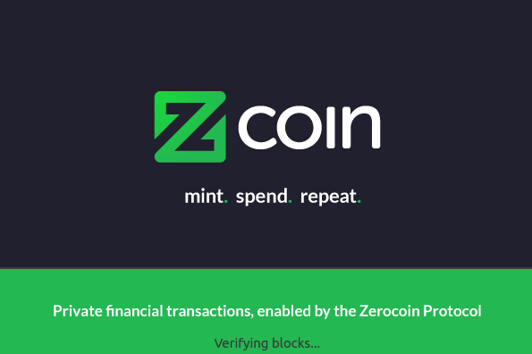

关于修改Lyra2算法参数以支持GPU挖矿的民意调查
[官方新闻][2017-01-09]
如果Zcoin只支持CPU算力挖掘，使得某些人可通过AWS和类似途径使用打折信用卡(并不全都合法)购买并运行大量的运算里进行挖矿，那么Zcoin的算力就存在被操控的可能。
这样就违反了挖矿的公平竞争性，这个也是我们开发MTP所要致力于解决的问题，同时还给了那些滥用信用卡的人提供了便利以及造成了不公。我们预期MTP开发将会在2017年3月份完成，核心开发成员正在考虑修改一些Lyra2算法的参数以使得Zcoin同时支持GPU挖矿，以减少Zcoin交易市场的抛售压力和解决CPU算力对全网算力操纵的不公。
为此社区进行一次非正式民意调查以了解社区的意见，我们的最终决定也会对社区的意见予以考虑。我们对于大家的反馈深感荣幸。民意调查将在我们的Slack里面单独的一个频道 #poll中进行。
如果你想要加入我们的Slack聊天室，请接入我们的邀请链接。请认真地投出您宝贵的一票！ 关于修改Lyra2算法参数以支持GPU挖矿的民意调查
官方发布V0.1.8版本钱包，启动速度大大改善
[官方新闻][2017-01-08]

我们很高兴释放 Zcoin v0.1.8版本，修正了以下问题：
钱包加载时间大大提高。第一次加载时间（新装/或重装）后仍然会花费几个小时的时间,但随后的加载只需要几分钟 修复MacOS系统下的编译问题 小编实测：第一次打开需要3小时，第二次打开需要10分钟左右
官方致力于将钱包加载时间缩短至几分钟，钱包已在测试当中
[官方新闻][2017-01-03]
社区对于Zcoin终端的最大不满莫过于需要花费数几个小时才能完成钱包界面的加载，对此我们官方已经在集中全力解决这个问题。因为零币机制实现的复杂性需要，每次重启钱包终端都需要进行额外的认证检索以防止发生双花问题才导致了加载时间过长。
我们现在正在测试一种能将加载时间缩短至几分钟的方案，开发者分支版本已完成。如果开发完成，则仅仅第一次安装Zcoin钱包需要几小时完成更新，而后面重启钱包将只需要几分钟便能完成。
一单MTP PoW算法开发完成，我们的终端加载时间还有望更进一步缩短，因为MTP的认证速度比当前使用的Lyra2算法要快得多。这也是为什么官方对于MTP算法开发为何要倾注如此多心血的原因。
新Zcoin矿池Maxminers启用
[官方新闻][2017-01-03]
当前可供社区旷工选择的矿池合计有三个，分别是： 矿池Suprnova. 矿池Pool.mn. 矿池Maxminers. 我们的挖矿指南已经进行了更新并含括新矿池。
请将客户端升级至最新版本v1.0.6
[官方新闻][2016-12-30]
由于在13999块进行了分叉，很多节点和客户端没有更新到最新版本导致出现网络阻塞 因此最新的版本更新将会强制旧版本钱包移除网络，只识别最新客户端以避免冲突。 请更新到最新版本v0.1.6 官方钱包下载链接https://github.com/zcoinofficial/zcoin/releases
Bittrex和两家主要矿池已集体公开支持Poramin
[官方新闻][2016-12-28]
交易所Bittrex和两家主要矿池已集体公开支持Poramin
紧接Zcoin两家主要矿池Suprnova和pool.M.N，交易所Bittrex已经在官网公告支 持Poramin版本钱包，下载链接：https://github.com/zcoinofficial/zcoin/。
将Zcoin社区对Poramin的压倒性支持与这个联系在一起，我们很有信心将Gary 威胁分叉钱包的影响降到最低。尽管目前Gary还实际控制着Zcoin的老官网域名 zcoin.tech，/r/ZcoinProject以及旧官网推特账号@ZcoinProject，但是从现在 开始，Gary已经跟Zcoin项目没有任何实质性的关系。
Zcoin的新官网域名将暂时采用zcoin.finance，官方推特账号将采用 @zcoinofficial。关于Reddit社区的Zcoin官方账号，我们还在甄选当中。以上变 更信息望各位社区成员注意甄别。
为了避免任何不必要的麻烦，请所有用户尽快到下面地址下载最新版本的Zcoin钱 包V0.1.5。 https://github.com/zcoinofficial/zcoin/releases
我们官方也意识到了大家对于钱包启动过慢的意见，现在也在致力于解决这个问 题，提升钱包开启的速度。
在这个如此具有挑战力的阶段，作为官方团队在此对社区的支持和理解表示感谢 ，我们将重建团队，勇往向前，将Zcoin带到一个新的高度。
编辑：Reuben Yap 翻译：Khitan（Update Founder Reward）。
Zcoin 更新至V0.1.5版本.
[官方新闻][2016-12-22]
Zcoin钱包终端V0.1.5更新公告
请尽快更新Zcoin钱包到最新版本，下载链接： https://github.com/zcoinofficial/zcoin/releases/tag/0.1.5
基本上Zcoin的第二大投资者身份已经被确认，但他还是选择保持匿名。即使博朗明 并没有直接从他那里得到任何投资资金，但是我们坚信这个是公正的，随着我们的项目日益增长，这位投资人也将成为我们的一项重要资产。在此对于这位投资人的谅解 表达我们深深的谢意。
自此，Zcoin的所有原始投资人(Gary除外)和新投资人的创始人地址都已经集成进入 本次最新版钱包，我们坚信完全能推动这个项目长足发展并激发其无限潜能。
需要注意的是，即使博朗明之前仅仅收到相当少的开发资金，但是我们已经全部开发 实现了zerocoin的功能，且大体上所有功能均已经过优化以获得更稳定的表现。另外 MTP已经在紧锣密鼓地开发当中。一旦钱包开发及社区策略尘埃落定，我们坚信这个 项目将重现辉煌。
我们的团队重建已经实施完成，如同本次声明所说的一样。我们正在寻求更多的开发 人员加入团队，如果你有很好的开发技术，请联系我们。
Zcoin官方更新钱包并更换Slack地址和官方域名
[官方新闻][2016-12-18]
Zcoin玩家 我是Zcoin开发人Poramin Insom，我决定使用新的Slack频道，地址为https://zcoinofficial.slack.com/.通过http://invite.zcoin.finance:3000可以获取到新的官方Slack邀请，通过本Slack频道，获取最新官方消息。 此外，官方网站地址变更为http://zcoin.finance，Github URL代码库官方地址不变https://github.com/zcoinofficial 我将会继续开发MTP，你可以在官方代码库中查看进度，钱包的其他改进将很快出来。 在新年来到之前，请确保你更新到了钱包的最新版本，在控制窗口中输入“getinfo”指令你可以看到协议版本号为90015，最新钱包下载链接：https://github.com/zcoinofficial/zcoin/releases/tag/v0.1.4 请尽快通知矿池经营者和交易所更新Zcoin钱包。 致敬 Poramin Insom